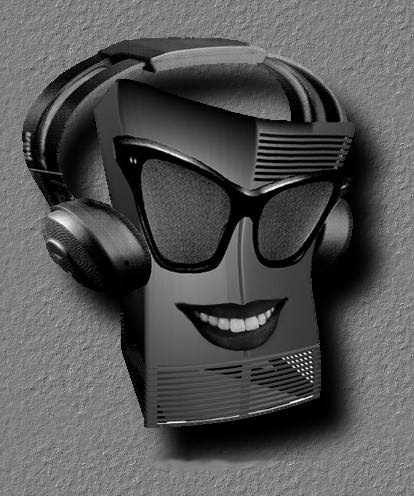
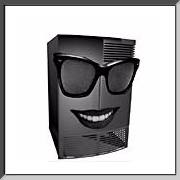
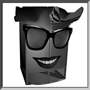
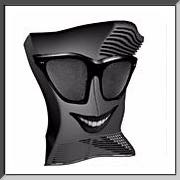
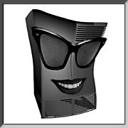

 The May/June 1992 issue of the CSD Pipeline Magazine was coming out and an interesting artwork was needed for the cover article on the first SGI system with built-in audio hardware. This system was known affectionately, and appropriately as "Hollywood" but later to become a household word with the name, "IRIS Indigo."
Without sounding too corny, from the first time I saw the cubic purple shape of the Indigo box, I thought it was the most unique and loveable looking thing I've ever seen. It had so much character! I grew more and more attached to its aura as I used it. More geekishly, I even sensed a certain personality emanating from it. During long hours at work, when I glanced over at it, I could've sworn I'd hallucinated a pretty girl smiling back at me.
So when it came time to conjure up an idea for the cover artwork, it was quite natural for me to realize my late-nite hallucinations into something now known as, "Indigo Girl," poking fun at the musical duo with a similar name.
 At the time, I was pretty much new to the whole world of Silicon Graphics Software. There was no Adobe Photoshop around and alpha masking sounded like a trick-or-treat word to me. I stumbled onto a copy of Creative License and used it to composite the elements together... all without the use of alpha channels. I used a steady hand to lasso around each element and tediously touched up the edges. Nope.. the magic wand wasn't invented for the UNIX workstation at the time.
 After the elements came together, it was time to add some ATTITUDE into my "Indigo Girl." It was around this time when the now infamous and highly illegal "Attitude Inside" t-shirt made its debut and Uncle Andy went nuts! Serves him right....
 I used Paul Haeberli's phwarp tool to texture map the image onto a 3D warpable plane. Then a tweak here and a tweak there... voila... instant ATTITUDE INSIDE!!
The piece went over quite well with the editor... so well that she renamed the article title to reflect on this image. The title became, "Putting Attitude into Your Audio Applications."
The art piece was first named, "Attitude d'Indigo," but was later changed to "Indigo Girl."
 Since then, she has made her debut to the SGI community in the first Annual SGI Artshow. Rather than showing just one side of her personality, I decided to create a collage, showing the many facets of her persona.
These pieces were originally displayed next to each other, vertically, forming a continuous collage of 8 warholish windows to her character. I hope this piece has captured the essence and the legacy of the little fella still known as, "Hollywood" to some of us.

The Making of "Indigo Girl!"
History
"Miss Hollywood"


{kind=link}
{kind=link}